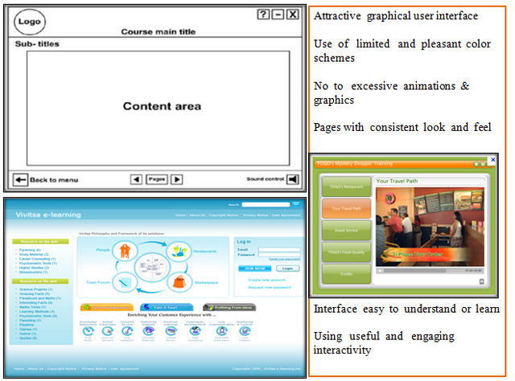

Shakshat Virtual Lab 
INDIAN INSTITUTE OF TECHNOLOGY GUWAHATI
Procedure
Steps
In this experiment, you will be using an online tool named UMTEL to evaluate usability of an e-learning web-site of your choice ( target website).
The online Usability Measurement Tool for E-Learning Sites ( UMTELS ) is composed of six sets of checklists.
These checklists belong to the following categories.
a) Content & Readability b) Navigation c) UI Design
d) Performance e)Pedagogy I f)Pedagogy II
Each check-list has six statements.
The checklist statement describes usability aspect of the website for a specific category. ( Refer to the a screenshot of the tool in figure below )
You are supposed to inspect the target website and judge to what extent do you feel that the statement shown in the tool is correct for that website.
Record your response whether you strongly agree , agree , fair , disagree or strongly disagree to the statement - by checking the relevant radio button below the statement.( Refer to the figure above )
Your response to each statement in the checklist will be assigned points by the tool automatically as follows
You can view some illustrations from the table below to get an idea of the usability evaluation.
After you finish recording your responses for a category, you can move to the next category in the tool by clicking on the relevant tab within the tool. You may review the website in any sequence you wish.
After you finish reviewing the target website using all six checklists in the tool you can view the results by clicking the tab “Find Website Score”. You will need to press another button “Click To Refresh Scores” to see the usability scores. The result table will display total points for each category and its usability level as shown in the image below. On the right hand side you will see a level indicator which indicates summed up scores in a graphical form. When one has multiple sites to compare such a level indicator gives a visual understanding of sites in comparision to each other.
Usability level for each category is assigned using the table below.

|
Response |
Strongly Agree |
Agree |
Fair |
Disagree |
Strongly Disagree |
|
Point |
1.00 |
0.75 |
0.50 |
0.25 |
0.00 |
|
No. |
Usability Category |
Example |
|
1 |
Content-Organization-Readability |
|
|
2 |
Navigation |
|
|
3 |
User Interface Design |
Close

|
|
4 |
Performance - Effectiveness |
|
|
5 |
Pedagogy - I & II |
|


|
Usability points |
0<=X<=0.2 |
0.2<X<=0.4 |
0.4<X<=0.6 |
0.6<X<=0.8 |
0.8<X<=1.0 |
|
Usability Level |
Poor |
Bad |
Moderate |
Good |
Excellent |
Note : Your responses will not be stored in any database and will be available till the tool is there in the active browser window. If you close the browser window all your responses will be lost and you will have to fill up the responses again. There fore it is suggested to take a screen shot of each checklist and the final results after you finish recording your responses. You can use these screen shot to write your final usability report of a e-learning site.